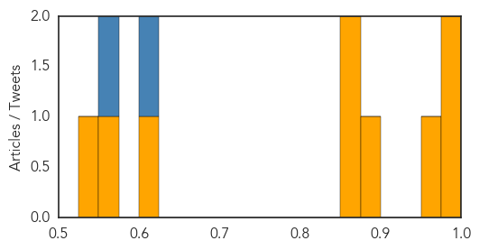

Influenza
30-Day Web Trend
0 alerts, 0 warnings

30-Day Twitter Trend
5 alerts, 0 warnings

Article Locations

Article Confidences
Top Articles:
- 0.999
- The severest flu cases are in young, unvaccinated adults
- 0.998
- Carroll County News: Local News: Officials: No H1N1 reported in Carroll County (01
- 0.973
- Bird flu kills two siblings in northeastern Cambodia - Xinhua
- 0.891
- Chinese tourist in Sabah infected with H7N9, Others news, Health News, AsiaOne YourHealth
- 0.872
- Opinion: Why global health security is a national priority
- 0.852
- Seven Cases of Human Infection With H7N9 Virus are Reported to WHO
- 0.611
- Pentavalent vaccines to be used in 11 more states: Azad
- 0.561
- Malaysia detects first imported H7N9 case
- 0.536
- Carson health department honored with state award
Top Tweets:
- 0.773
- Following public health emergencies such as the 2001 anthrax attacks and the 2009 H1N1 influenza pandemic,... http://t.co/QuuigMwoZ4
- 0.623
- Myth Buster No 8: Sick people shouldn’t be vaccinated against influenza. If you have a minor illness without fever, vaccination is...
Yellow Fever
30-Day Web Trend
2 alerts, 0 warnings
30-Day Twitter Trend
0 alerts, 0 warnings

Article Locations

Article Confidences

Top Articles:
-
No articles found for Feb 12, 2014
Top Tweets:
-
No tweets found for Feb 12, 2014